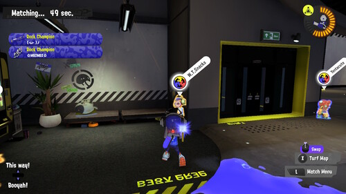
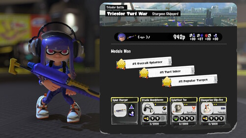
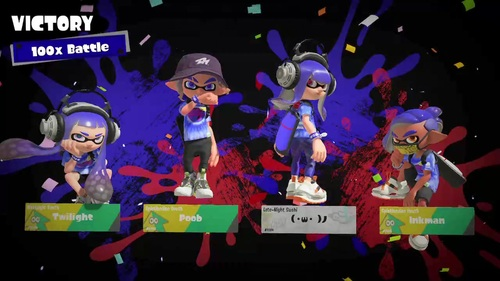
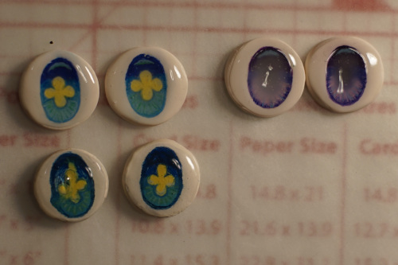

LiterallyHifumi listened to my suggestion and made a YouTube playlist of his singing synthesizer pages! Bless my lazy butt. Please listen to it!
I played the Splatfest world premiere! I prepared myself for the inability to use my wrist for a week and booted up my ACNH/Splatoon switch. I dumbly did not check with my friends before choosing a team so I played alone. ._.; It really is more fun to play with friends.
The upgrades in the lobby are great! Playing with the targets is so much nicer than waiting on a screen. I guess I don't need a secondary switch to play animal crossing in lobby screens anymore.
The new songs were fun. I wasn't quite grooving as much as I did with the Off the Hook songs but I probably never will again. The main splatfest theme is Nippon Egao Hyakkei. Shivers is still a megatwink and you cannot change my mind. Frye (AKA me timbers) said she was a girl so I'll believe her for now. I'm still not sure what breed of cephalopod she is...
The 3 way battles were confusing as all heck. I still don't know what the ultra signal is but if everyone wants to stand in the same place in range of my charger that doesn't upset me. I'm 90% sure it's a waste of time to cover the other color on your team other than to move around, but a lot of players were covering everything. I'm sure my single teammate in my color was pissed at me for bringing a charger to a turf war, as usual.
I did have someone disconnect early in the battle and surprisingly, the match ended in a draw immediately?! Later, I had a match where someone's connection got etchy sketchy and it let me finish out the match as the only one on my team against 2 on the other.
I got my first 100x battle ever (I think)! And I won it! Too bad it was all off the record. I also got like 4 or 5 10x battles which is unusual to me.
They added discord like numbers to the end of nicknames. I'm not sure what the purpose is yet, but I really don't need to be properly identified in a game for children. I also had to disable user generated content. It's too much for me. Kids are too much for me.
I made some polymer eye bases on Sunday. I painted a purple pair that night and added glaze. The next morning I painted the blue/yellow pair and glazed it. It was Friday before the blue/yellow pair cleared up and the purple ones still aren't clear almost a week later. The polymer clay just must take a lot longer to dry on top of.
Polymer eyes on top, original air dry on bottom.

I started reading the first pages of The Natural Way to Draw. This dude seriously requires a live model, preferably nude. Now how in the heck were people supposed to hire a nude model if they couldn't afford classes and only this book? We are too blessed to have an internet full of naked people to draw for free. Or are we?
He also requires you to draw in 3 hour uninterrupted sessions. Like this dude is serious!!! I'm definitely not going to pay someone to sit naked in front of me while I scribble on the page. It's 2022 though! I can make some substitutions and he will never know because he died before he could even finish the dang book.